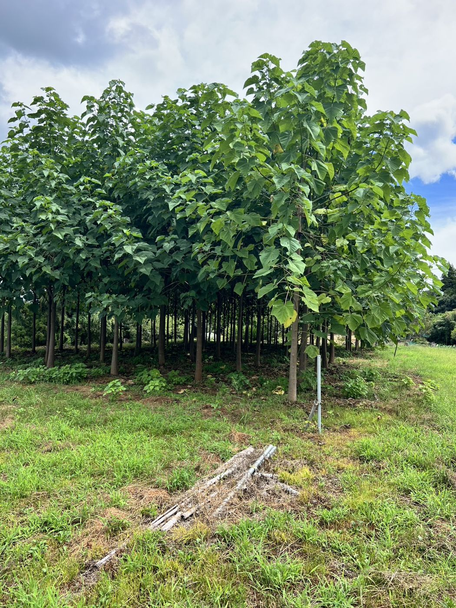
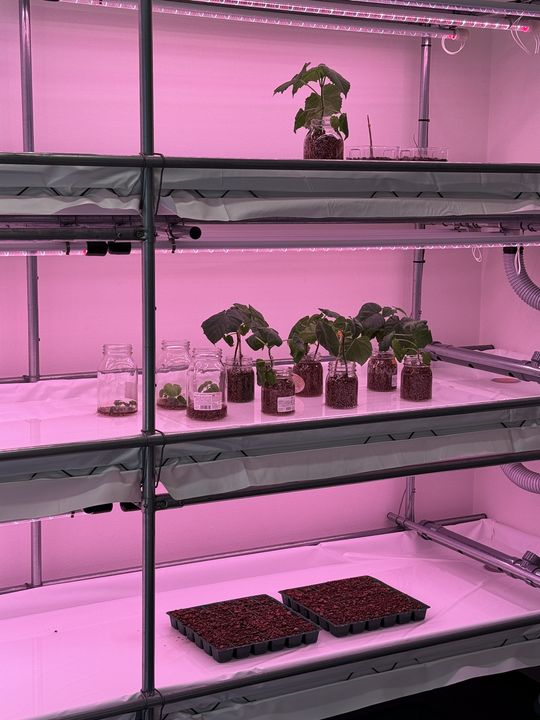
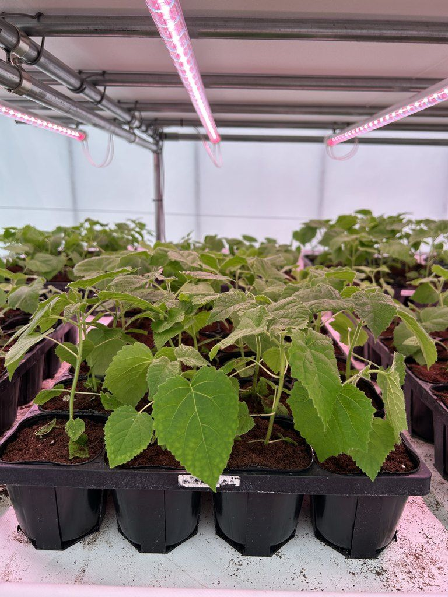
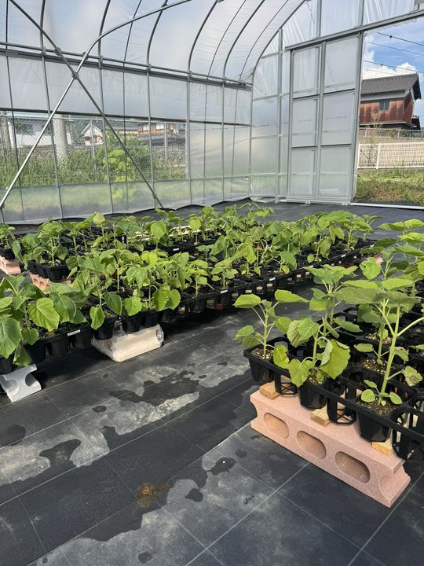
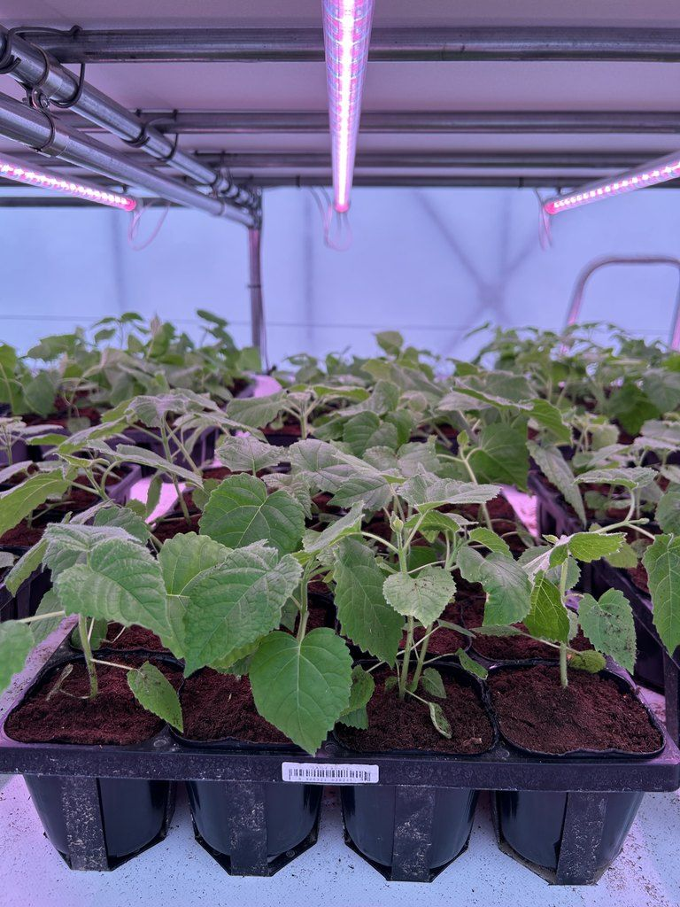
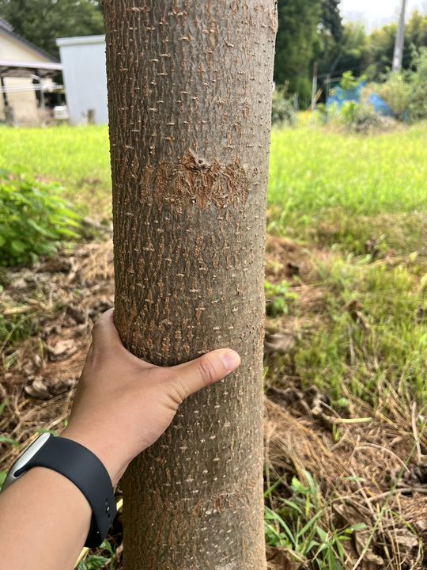
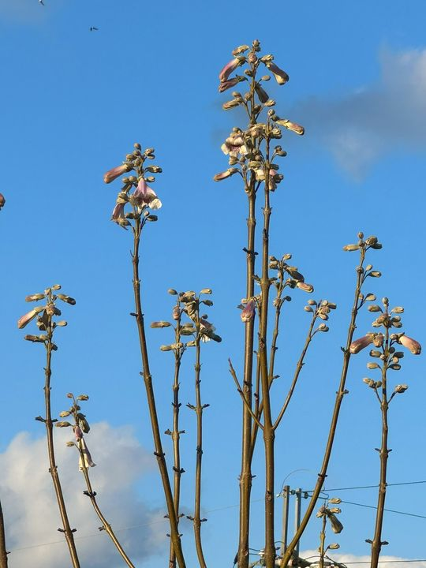
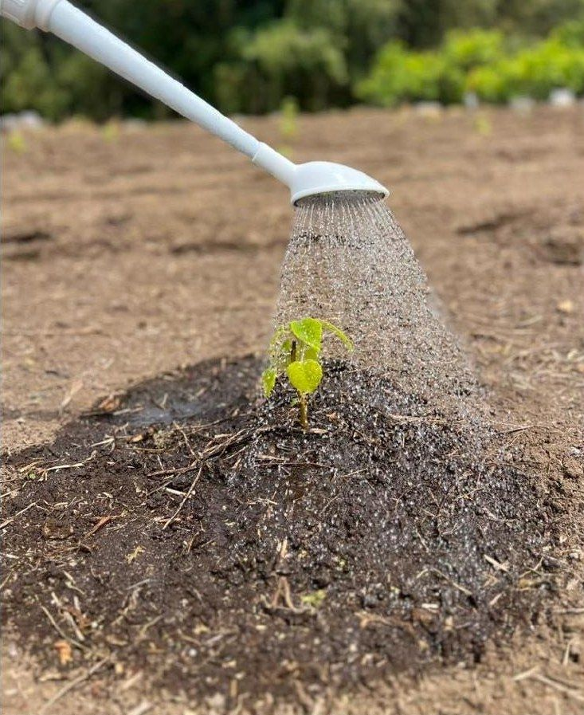
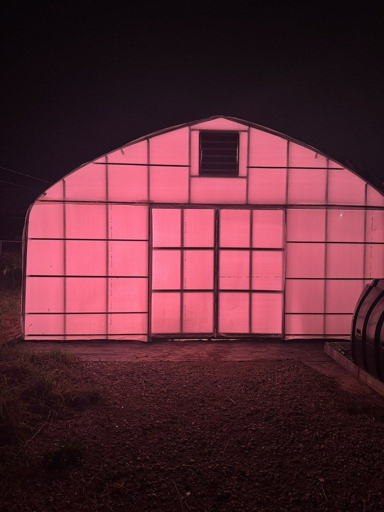

Kyoto Emperor Paulownia
京都皇帝早生桐の苗 5年で成木。 伐っても、 また生える。
捨てるところがない木で、
桐ビジネスをはじめませんか。
- 01植えて5年で成木になる
- 02伐っても何度も生え直す
- 03捨てるところがない木
- 04クローン培養で育てた自社の苗

大分県豊後大野市の試験圃場。2025年5月に植えて1年3か月（2026年8月撮影）
For you このような方へ
山林、耕作放棄地をお持ちの方、購入をご検討中の方へ。

Problem いま、こんなことは
その土地、 このままで いいですか。
当社の山（奈良県御杖村・2023年9月、伐採中）
何も生まない土地にも、税金と手間は毎年かかります。そして木を植えても、伐れるようになるのは、ずっと先のこと。
土地をお持ちの方
何も生まないまま、
税金と手間だけがかかっている。
山林や耕作放棄地が何も生まないまま、税金と管理の手間だけがかかっている。植林しても収穫まで、
自分の代では成果が見えない。
出典：林野庁「森づくりの理念と森林施業」第2部 ── 標準伐期齢（主伐時期の目安として市町村森林整備計画に定められた林齢）は「概ねスギで35〜50年、ヒノキで45〜60年」
これから土地を購入する方
買った後、
早く収益につなげる使い道が見つからない。
土地を買った後、早く収益につなげる使い道が見つからない。林業に興味はあるが、伐るたびに植え直す手間と費用が気になる。
Solution こたえ
京都皇帝早生桐なら、 解決できます。
待つのは、5年。伐ったあとは植え直さずに、根からまた育つ。
その土地が、木を育て続ける場所に変わります。
01 — Growth
3年の実績と、5年目の目安

- 高さ
- 8m
- 幹回り
- 72cm
直径にすると、約23cm。
徳島県吉野川市（開発者の圃場）での実測。当社資料（2026年8月）に記録。
- 幹回り
- 約120cm
- 直径にすると
- 約38cm
3年間の平均の太り方（1年あたり幹回り24cm）が5年目まで続いた場合の計算です。実測ではありません。
日本の気候で育てた記録は、いちばん古いもので3年です。これから先の記録も、圃場ごとに積み上げています。
ほかの圃場の記録
もとは、15年以上
使われていなかった田んぼ。
大分県豊後大野市の試験圃場は、長く放置された休耕田でした。土の対策をして、2025年5月15日に植えています。
- 3か月半2025年8月31日、すべての木が1.7mを超え、大きいものは3mに
- 1年高さ5〜6m
- 1年3か月2026年8月の姿（写真）
当社の記録（植えた日から月ごとに写真と作業を記録）

ほかの場所でも
- 京都府植えて2年で高さ7m・幹回り46cm
- 北海道札幌市2025年夏に植え、2026年6月時点で高さ2m
当社資料（2026年8月）より。育ち方は、土づくりと気候で変わります。
02 — Regrowth
伐っても、また生える
伐採後は植え直さず、根から萌芽して再び育ちます。植え直しの費用と手間がかかりません。
萌芽（ほうが）── 伐った切り株の根もとから、新しい芽が伸びてくること。
03 — Clone culture
クローン培養の、自社の苗
自社で研究開発した品種を、クローン培養で増やしています。培養の棚から育苗ハウスへ。一本一本が、同じ性質を受け継いだ苗です。





成長力が高い
1年あたりに幹が太る幅（地上1.3mの直径）
当社分は自社の実測（幹回りを円周率で割って直径に換算）。海外は公開されている研究の値。（ ）は調査年数。当社資料（2026年8月）より。

04 — Value
成木としても、製品としても売れる
伐った木はそのまま成木として売ることも、加工して製品として売ることもできます。売り先の紹介や加工もご相談ください。
桐は、原木市場でも「キリ」として取引されている木です。
Nothing wasted 余すところなく
桐は、捨てるところがない木。
古くから日本の暮らしに使われてきた桐。世の中では、このように使われています。
-
幹
家具・箪笥・建材
軽く、狂いが少なく、湿気を通さない
Trunk
-
花
香水の原料
Flower

-
葉
女性用育毛剤の原料
市販品に使われています
Leaf
- 灰 懐炉の燃料 かつての使われ方 Ash
※花・葉は、原料として使われている例のご紹介です。効能・効果をうたうものではありません。
Offer ご提供
苗は1本から。植えた後まで支えます。
- i苗の販売1本から。価格は本数・地域に応じてお見積もりします。
- ii植樹・お手入れ苗代とは別料金でお引き受けします。
- iii伐った後のご相談売り先の紹介や加工のご相談に応じます。

Flow 流れ
ご相談から伐採まで
- 1Step 1お見積もりのご依頼ご希望の本数と、植える場所をお知らせください。
- 2Step 2植える場所の確認土の状態や水はけを確かめます。
- 3Step 3お見積もりのご提示本数・地域に応じてお出しします。
- 4Step 4苗のお届け・植樹植樹は苗代とは別料金でお引き受けします。

植えた日の苗（2025年5月） - 5Step 5お手入れ（ご希望の方）苗代とは別料金でお引き受けします。
- 6Step 65年目に伐採、そして萌芽伐った根もとから、次の木が育ちはじめます。
そして、また5年。植え直さずに、同じ根から。
大分県豊後大野市の試験圃場・林の中
植林を終えた山ごと
自分で植えるより、
育った山から始めたい方へ。
Q&A よくある質問
よくある質問
1本だけでも買えますか？
はい、1本からご購入いただけます。
どんな場所に植えられますか？
水はけと土づくりが育ちを左右します。大分県豊後大野市の試験圃場は、もとは15年以上使われていなかった休耕田でしたが、土の対策をして植え、1年3か月でここまで育ちました。北海道札幌市でも育っています。植える場所は、お見積もりの前に確認してご提案します。
植樹やお手入れも頼めますか？
はい、苗代とは別料金でお引き受けします。
伐った木はどうすればいいですか？
売り先の紹介や加工のご相談に応じます。
Contact お見積もり
苗のお見積もりを依頼する
1本からでも、お気軽にどうぞ。植える場所が決まっていなくても、ご相談いただけます。
電話で相談する（TEL・FAX）075-748-9188